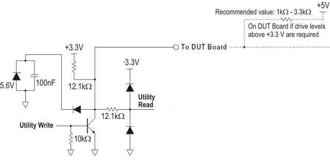
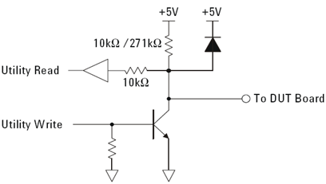

Utility line characteristics
The characteristics of utility lines is defined by the number of the lines available, the method of controlling the lines and the electrical characteristics of the output and input circuitry.
Compatibility of TH types and DUT interface types
For further details and utility lines design recommendations, see Designing compatible utility lines.
Internal pull‑up resistor of utility lines
- V93000 EXA Scale systems
- On V93000 EXA Scale systems, inactive utility lines (with open low‑side switch) are always pulled up to+3.3 V. See Utility lines (V93000 EXA Scale systems).
- V93000 Pin Scale and Smart Scale systems
- On V93000 Pin Scale and Smart Scale systems, the configuration of the pull‑up resistors depends on the test head
type and the type of the wiring board.
Test head Wiring board Utility lines Utility block Pull‑up resistor to ... ATH all all +3.3 V CTH active URW00 … URW15 3 and 4 +3.3 V and +5 V all other all other +3.3 V passive all all +5 V STH active URW00 … URW15 1 to 3 and 5 to 7 +3.3 V and +5 V all other all other +3.3 V passive all all +5 V LTH active URW00 … URW15 2 to 8 +3.3 V and +5 V all other all other +3.3 V passive all all +5 V
The internal power supplies, to which the internal pull‑up resistors of utility lines are connected, are independent of the utility power supplies and cannot be switched off.
Therefore, the current through the internal pull‑up resistor of deactivated utility lines and the connected circuitry on the DUT board can push up the output voltage of a switched‑off utility power supply to an undefined value.
For more information, refer to Common characteristics of all utility power supplies in Utility power supplies.
Examples
Example 1: Utility line circuitry (Active wiring board of V93000 systems)

"+5V" is the Internal utility power supply (V93000 systems) that is available at pogo pins "UP5V" of all utility pogo blocks.
Example 2: Utility line circuitry (Passive wiring board of V93000 systems)
The diagram shows the utility line interface circuitry on a system fitted with the passive wiring board.

"+5V" is the Internal utility power supply (V93000 systems) that is available at pogo pins "UP5V" of all utility pogo blocks.
Functional changes
- Introduced before SmarTest 6.3.2
- SmarTest 6.5.4: Support of 128 utility lines on compact test head with DUT Scale interface.
- SmarTest 7.1.0: Support of A-test head
- SmarTest 7.2.0: 256 sequencer‑controlled utility lines introduced on ATH/CTH/STH DUT Scale and on LTH
- SmarTest 8.3.4: Utility line characteristics for V93000 EXA Scale systems added